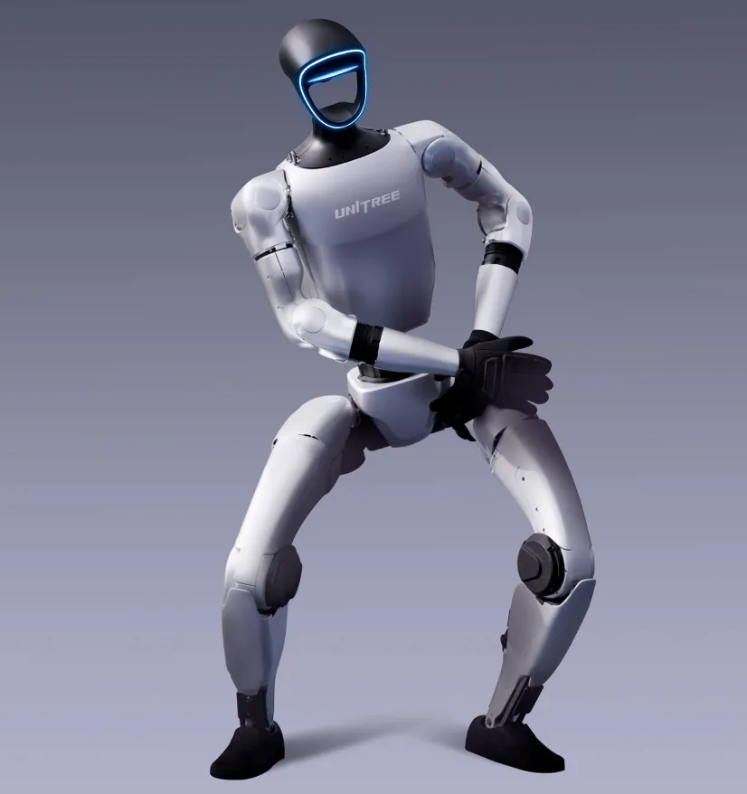

Unitree H2 vs Boston Dynamics Atlas
Two humanoids, two philosophies — and one of them just became Nvidia's reference body.
Thor and Isaac GR00T turned Nvidia into the default brain supplier for China's humanoids. Huang's resignation does not stop the shipments. It removes the person who made robotics a priority and argued against the export walls — and those walls were already going up on both sides.

Thirty-three years, ended in a statement short enough to read twice. On November 12, Nvidia's board said Huang had stepped down as president, chief executive and board member, effective immediately. Chief financial officer Colette Kress, who has held the CFO job since 2013, took over as interim CEO while the board searches both inside and outside for a permanent successor. Former Synopsys CEO Harvey Jones became the company's first board chair.
The market reaction was violent and then partly retraced: shares fell as much as 14.3% before closing down about 4.3%, a loss of more than RMB 1.2 trillion in market value by Chinese press counts. Wall Street is repricing a company that has spent three years as the certainty trade in AI. China's humanoid makers are repricing something narrower and more practical: the supply of the compute that runs their robots.
It is not one chip. A high-end Chinese humanoid typically buys three things from Nvidia at once. The first is Jetson Thor, the Blackwell-based module that handles onboard inference — up to 2,070 FP4 TFLOPS, 128GB of unified memory, a 40–130W envelope, priced at $5,499 for the developer kit and $4,999 per T5000 module at 1,000 units on NVIDIA's current price list. The second is the Isaac toolchain: Sim and Lab for training and evaluation, ROS middleware for deployment. The third is GR00T, the open foundation model family for humanoid manipulation.
Nvidia's China team named seven local companies as Jetson Thor early adopters when the module launched in August 2025: Unitree, AgiBot, Galbot, UBTech, EngineAI, United Imaging and Wanji Technology. The same announcement listed Agility Robotics, Amazon Robotics, Boston Dynamics, Figure, Caterpillar, Hexagon, Medtronic and Meta elsewhere. That overlap is not an accident of marketing. China is where humanoids are being built in volume first, so it is where the reference hardware gets designed in first.
The strongest single link was forged on June 1, 2026, when Nvidia announced its Isaac GR00T reference humanoid for academic research. The body is Unitree's H2 Plus; the hands are Sharpa's five-fingered tactile design; the compute is Jetson Thor; the software is Isaac GR00T. Nvidia did not buy a Chinese robot. It wrote one into its own standard kit, the thing labs and universities copy when they start.
That is worth more than an order book. It is a global credential that Unitree's competitors cannot buy: the most important compute vendor in robotics publicly validated its chassis. It is also a single point of narrative failure. If Nvidia's robotics programme loses priority inside a finance-led interim organisation, the chip keeps shipping and the reference design keeps existing, but the co-marketing engine — keynotes, partner lists, joint demos — slows down. Unitree would still have the hardware; it would lose the loudest amplifier it had.
| Company | Nvidia dependency | Alternative in hand | Exposure |
|---|---|---|---|
| Unitree | H2 Plus is Nvidia's GR00T reference body; Thor compute | No public alternative for high-compute inference | High on halo, low on supply |
| AgiBot | Thor early adopter | Huixi R1 — AgiBot is an investor and the first volume customer, per Chinese press | Medium |
| UBTech | Thor early adopter | Xixuan Chuangzhi JV with MetaX, RMB 500m angel round | Medium |
| Galbot | Thor early adopter | No public alternative | Medium-high |
| EngineAI | Thor early adopter | No public alternative | Medium |
| United Imaging, Wanji | Thor early adopters in medical imaging and ITS | Robotics is peripheral to their core products | Low |
Sources: Nvidia China's Jetson Thor launch post (August 2025), company statements and Chinese press. The exposure column is editorial judgment, not a disclosed metric.
What Nvidia has lost is not a figurehead but a founder who set allocation. SemiAnalysis put it bluntly on November 13: the company "was never built for him not to be there." The organisation does not collapse. It becomes more conservative, and multi-year bets that depended on one person's conviction — robotics is exactly that kind of bet, with no near-term revenue comparable to data centre GPUs — move slower.
The other loss is political. Huang was one of the most active voices in Washington arguing against overly broad restrictions on chip exports to China. His departure does not cause the current congressional momentum, but it removes a well-funded, high-profile counterweight at the worst possible moment. House Speaker Mike Johnson said this week that he supports restricting China's access to advanced chips and that a consensus was forming in Congress; Republicans are trying to attach measures to the annual defense authorization bill, with at least four separate chip-export bills in play.
Kress is a finance operator, not a product founder, and she is doing two jobs at once while the board runs a public search. That is a recipe for continuity in the quarters that matter — Thor shipments, GR00T releases — and for caution everywhere else. The first real signal will be how the robotics line is treated at the next GTC: a keynote slot, a roadmap update, or a paragraph in someone else's slide.
There is one complication, and it is unconfirmed. The Financial Times reported on November 15 that Huang has discussed a return with confidants, and that Silicon Valley allies are assembling a "war room" to lobby the board and the White House for his reinstatement. Nvidia has not confirmed any of it. If it happens, most of this analysis reverses: the founder returns, the roadmap priority returns, and the interim period becomes a footnote. If it does not, the company is left with a board that has already staked its authority on an independent search — and a robotics programme that has to justify itself on cash flow like everything else.
For Chinese robot makers, the more consequential American action happened before Huang left. On July 28, 2026, the FCC's Public Safety and Homeland Security Bureau added "foreign-produced advanced robotic devices" to its Covered List — a category that captures humanoids, quadrupeds and other mobile robots above roughly 4.4 pounds (2 kg) that navigate, sense and connect to a network. New models cannot obtain the equipment authorisation needed to be imported, marketed or sold in the United States. Existing authorisations survive, but the breathing room is narrow: software-only changes are covered by a multi-year waiver, while hardware changes need a new authorisation that the listing effectively blocks.
There are two escape hatches, and both are hard. A device can qualify for a conditional approval granted only by the Department of War, on a case-by-case basis; or it can qualify as a "domestic end product" if US-made components exceed 65% of its value — rising to 70% in 2029. For a Chinese humanoid built from Chinese actuators, a Chinese battery and a Chinese frame — with the compute bought from Nvidia — neither path is realistic in the near term. The same FCC action also reaches robot vacuums and lawn mowers, which tells you how broadly the agency is reading the category.
Then, on October 28, the White House published a Section 232 proclamation on robotics and industrial machinery. The Commerce Department found that imports of robots, machinery and components threaten national security; the proclamation directs the trade representative and Commerce to negotiate agreements with trading partners and to report back within 180 days, and explicitly leaves tariffs, duties, quotas and fees on the table if those talks fail. No robot tariff has been imposed yet. The direction is clear.
Put those two together and the arithmetic for a Chinese humanoid maker is simple: new models are already shut out of the US market, existing models face a narrow path for hardware changes, and the import regime may get more expensive before it gets cheaper. Nvidia's CEO transition does not change that. It changes the other side of the same coin — how easily Chinese firms can keep buying the best available brain.
China's chip alternatives are real, but they are not interchangeable with Thor. The most credible high-compute challenger is Huixi Intelligent's R1, a 7nm automotive-grade chip repurposed for robots. An industry survey cited by 36Kr put Huixi at roughly one-fifth of global high-compute robot chip shipments in the first half of 2026, second only to Nvidia. AgiBot is both an investor and the first customer to put it into volume — the R1 platform shipped in AgiBot's Genie G2 units from late 2025. In August 2026 Huixi announced a 375-TOPS "PRO" part built around a fused brain-and-cerebellum architecture. The caveat is concentration: one anchor customer, one architecture, and a "global number two" title in a market that is still small.
The volume substitute is Rockchip's RK3588. It is a 6-TOPS applications processor that Chinese humanoid makers use as the motion-planning and sensor-fusion board — the cerebellum, not the cortex. It is cheap, mature and widely sourced, which is why it appears in so many small humanoids and quadrupeds. It cannot run a vision-language-action model at control-loop rates.
The long shot is Xixuan Chuangzhi, the Wuxi company founded in May 2026 by UBTech and GPU designer MetaX. It raised a RMB 500 million angel round at a reported RMB 4 billion post-money valuation and is building a domestic GPGPU-based embodied-AI compute platform. Its own framing is three years to volume production, which puts meaningful output around 2029, not 2027.
| Platform | Vendor | Role in a humanoid | Status |
|---|---|---|---|
| Jetson Thor | Nvidia | Onboard inference for VLA models; Isaac/GR00T stack | Shipping; $5,499 dev kit, $4,999 module |
| R1 / R1 PRO | Huixi Intelligent | High-compute inference; fused brain-cerebellum (PRO) | In volume at AgiBot; ~20% of H1 2026 shipments |
| RK3588 | Rockchip | Motion planning, sensor fusion, "cerebellum" | Mature, widely designed in |
| Xixuan platform | UBTech + MetaX JV | Domestic embodied-AI compute | RMB 500m angel; volume target ~3 years |
Shipment share and funding figures come from Chinese industry press and company announcements; they are not audited market data.
Not the companies on Nvidia's early-adopter list. They bought a component and built a product; if Thor becomes harder to get or more expensive, they absorb it, redesign, or shift to Huixi. The companies that get hurt are the ones whose pitch deck says "Nvidia ecosystem partner" and whose product contains no Nvidia silicon of its own — integrators, dev-kit resellers and small humanoid startups using the logo as a substitute for engineering. That sentence was an asset while Huang was the face of the ecosystem. It becomes a risk flag when the ecosystem's priority is in question.
Unitree sits in between. It has real hardware and a real reference design, but its global story is more tied to Nvidia's validation than any peer's. AgiBot and UBTech, whatever their other problems, have already put domestic silicon into their own cap tables. That is the difference between a marketing dependency and a supply dependency — and only one of them can be fixed with a purchase order.
Yes. The board announced on November 12, 2026 that he had resigned as president, CEO and board member, effective immediately. Colette Kress, the CFO, is interim CEO; Harvey Jones, the former Synopsys CEO, is the first board chair; the search for a permanent CEO is open to internal and external candidates.
No cutoff has been announced. Thor modules, Isaac Sim and Isaac Lab, and the GR00T models are shipping products and open software. The risk is a change in roadmap priority and allocation, not an immediate stop.
Unitree, because the H2 Plus is the body in Nvidia's Isaac GR00T reference humanoid. That is a credential dependency as much as a silicon one. AgiBot and UBTech have partial hedges through Huixi and the Xixuan joint venture.
For motion control, yes — RK3588 is already doing that job in volume. For high-compute inference, Huixi's R1 is the closest, with roughly one-fifth of global shipments in H1 2026 by industry estimate. The remaining gap is the simulation and foundation-model stack, which does not move with the chip.
Two humanoids, two philosophies — and one of them just became Nvidia's reference body.
Where the compute line sits in the bill of materials.
The joint modules that turn a Thor decision into a shipping robot.
Deployment revenue versus platform sales — and why the chip hedge differs.
The company at the centre of Nvidia's reference design.
The other half of the perception stack — where domestic substitution is further along.
Company profiles, product pages and supplier analysis for China's robotics ecosystem.